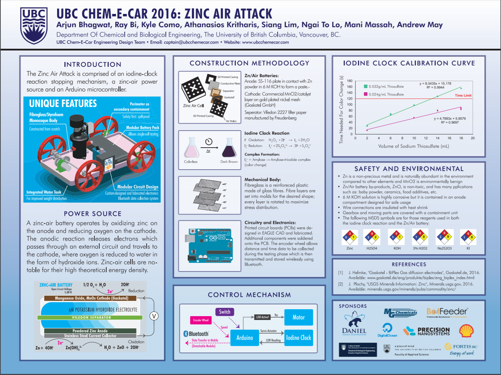
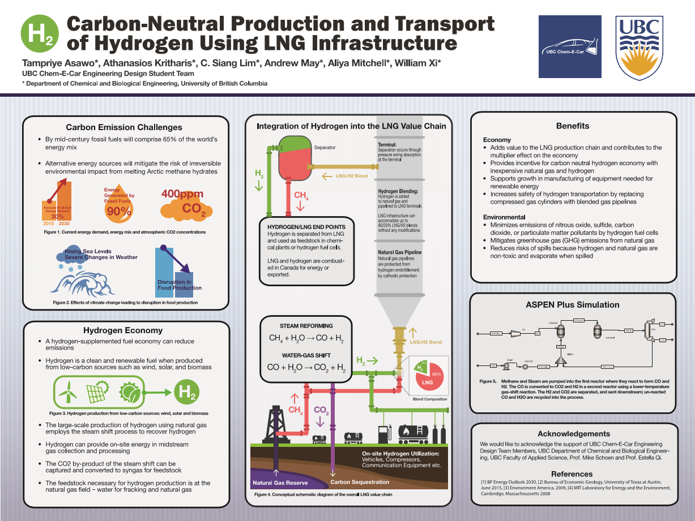
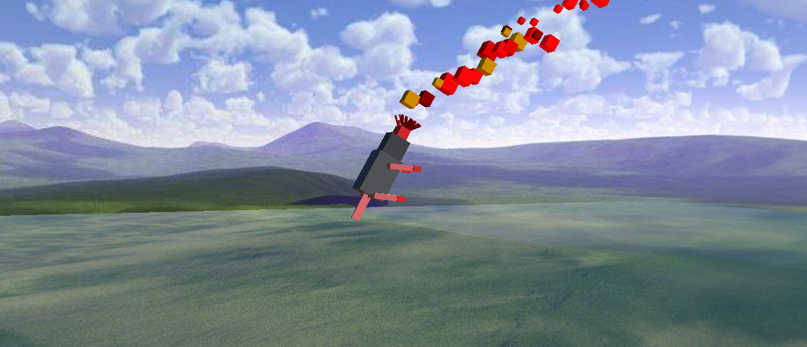
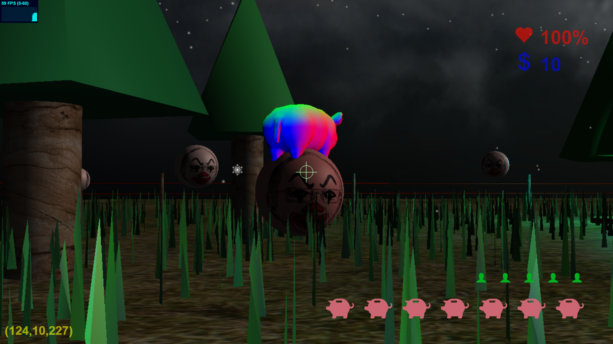
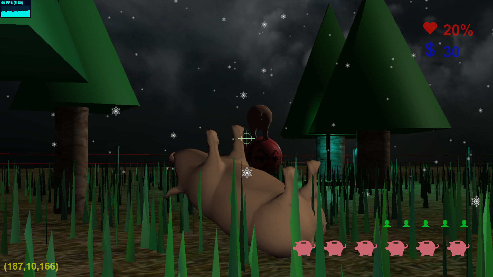
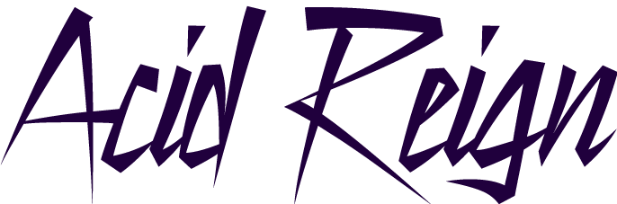

4th Year UBC chemical engineering/computer science undergraduate. Co-op and work experience in natural gas utilities, alternative energy and computational research.
BASc. Chemical & Biological Engineering (Minor in Computer Science), Expected 2017
University of British Columbia
May 2016 - September 2016
As part of the Energy Solutions group, I worked on engineering analysis and provided technical support for FortisBC’s commercial and industrial Energy Efficiency & Conservation programs. Projects include developing Excel and VBA tools for workflow automation and refining cost estimation algorithms for FortisBC’s new Online Service Application (OSA) tool.
September 2015 - Present
Mathematical and computational biology research - development of a biophysical model for cell polarization and intercalation during Drosophila germband extension with Prof. Feng’s research group. Our goal is to extend the model developed in Lan et al. (2015).
We used MATLAB and now Python in developing our model.
Research progress presented at the Northwest Biomechanics Symposium 2016. Abstract available here. This is the simulation described in the abstract:
January 2016 - Present
APSC 160 is UBC’s introductory C programming course for first year engineering students. As undergraduate TA, I assisted first year students (often with limited programming experience) with understanding technical concepts and helped debug their C code.
September 2014 - December 2014
Fabricated and analyzed the performance of gas diffusion electrodes for a cleantech startup working on CO2 conversion technologies.
September 2015 - Present
UBC Chem-E-Car is a student design team that competes in the annual AIChE Chem-E-Car competition. In recent years, we’ve expanded the team by about 500% (from 7 to ~40, lol) and now we’re working on a bunch of cool new projects related to energy generation/storage and process automation:
Currently, on the technical side, I’m mostly involved with software/hardware development for our new beer brewing project.
Long, long ago (circa 2013), the UBC Chem-E-Car team started a blog. When I joined in 2015, I proposed that we start an actual team website and I’ve been working on several iterations of the site since.
Implementation details:
Bootstrap framework, most iterations based on nice-looking themes with our own custom modifications. Got some decent experience working with HTML, CSS, Javascript by developing the site.Hugo for convenience in integrating blog articles into our site.Also training junior webmasters as part of succession planning: Ngai To.
The department requested that we made our team finances public to encourage transparency and good practices, so I decided to make a custom web app for tracking our expenses.
We don’t really have a name for it yet, we just call it our Finance App. Developed with a Ruby on Rails backend. Very early beta but it satisfies most of our needs for now.
TODO list:
D3.js?On the admin side, I’m working on several roles including:
Here are some technical posters that I designed for past conferences and competitions.


January 2016 - April 2016
Modeled a star-nosed mole for Project 1 using unit cubes and matrix transformations. My mole is available for your viewing pleasure in the course’s Hall of Fame 2016.

For the course’s final project, I made a clown-shooting FPS game in WebGL with help from the three.js library.
Here are some screenshots:


September 2016 - Current
Capstone project (CHBE 454) in a team of six. We are working with NORAM to design a sulphuric acid plant with the option for oleum production. Here’s our project website.

Team members, in alphabetical order: